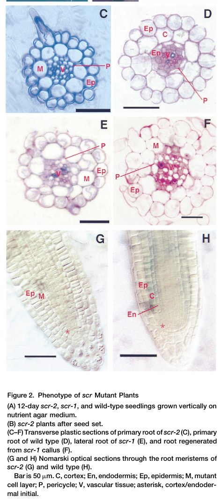

SCARECROW (SCR) is a plant-specific GRAS-family nuclear transcriptional regulator that controls radial tissue patterning in Arabidopsis. Together with the mobile GRAS protein SHORT-ROOT (SHR), SCR forms a nuclear heterodimer that directs the asymmetric (formative) cell division of the cortex/endodermis initial and its daughter, generating the distinct cortex and endodermis cell layers, and specifies and maintains the root quiescent centre and the surrounding stem-cell niche. SCR sequesters SHR in the nucleus of the endodermal layer, restricting SHR intercellular movement to a single cell layer and reinforcing this through a SHR/SCR-dependent positive feedback loop on SCR transcription. The SHR-SCR heterodimer does not bind DNA directly; instead it acts as a transcriptional cofactor that recruits BIRD/INDETERMINATE DOMAIN (IDD) zinc-finger transcription factors such as JACKDAW (JKD), MAGPIE (MGP) and NUTCRACKER (NUC) to control ground-tissue target genes (including MGP, NUC and CYCLIN D6;1). SCR activity is spatially constrained by direct binding of the RETINOBLASTOMA-RELATED (RBR) protein through SCR's conserved LxCxE motif, forming a bistable circuit that confines asymmetric divisions to the stem-cell region. Beyond the root, SCR is expressed in the starch sheath of the hypocotyl and inflorescence stem, where its radial patterning function is required for shoot gravitropism, and in leaf bundle-sheath cells, where with SCR-LIKE 23 it specifies bundle-sheath fate. SCR also contributes to coordinating cell elongation, endodermal differentiation and redox homeostasis in the root.
Definition: A transcription coregulator activity in which a plant-specific GRAS-family protein, acting alone or as a GRAS-GRAS heterodimer, regulates target gene transcription by binding to a sequence-specific DNA-binding transcription factor (such as a BIRD/INDETERMINATE DOMAIN zinc-finger protein) rather than by binding DNA directly.
Justification: The SHR-SCR GRAS heterodimer regulates transcription via the DNA-binding BIRD/IDD factors and shows no evidence of direct DNA binding; a GRAS-specific cofactor term would more precisely capture this widely conserved mode of action than the generic coregulator term and avoid the inaccurate DNA-binding transcription factor activity annotations.
Parent term: transcription coregulator activity
Supporting Evidence:
| GO Term | Evidence | Action | Reason |
|---|---|---|---|
|
GO:0005634
nucleus
|
IEA
GO_REF:0000044 |
ACCEPT |
Summary: SCR is a nuclear transcriptional regulator; nuclear localization is well established experimentally and by UniProt subcellular location.
Reason: UniProt curates SCR as nuclear, and this is supported by multiple IDA observations (PMID:26494755, PMID:15314023) and by SCR sequestering SHR into the endodermal nucleus (PMID:17446396). The IEA subcellular-location mapping is correct.
Supporting Evidence:
PMID:17446396
SCARECROW (SCR) blocks SHR movement by sequestering it into the nucleus through protein-protein interaction
|
|
GO:0006355
regulation of DNA-templated transcription
|
IEA
GO_REF:0000108 |
ACCEPT |
Summary: SCR is a transcriptional regulator that, in the SHR-SCR heterodimer, controls expression of ground-tissue target genes (MGP, NUC, CYCD6;1).
Reason: This is the IBA/GO_Central-supported core biological process for SCR. The SHR-SCR complex regulates target gene transcription, even though it does so as a cofactor recruiting BIRD/IDD DNA-binding factors rather than by direct DNA binding (PMID:28211915). The term is at an appropriate level of generality.
Supporting Evidence:
PMID:28211915
These results suggest that SHR-SCR are transcriptional cofactors that regulate target gene transcription via binding of SHR to BIRD transcription factors.
PMID:26494755
the BIRDs and SCARECROW regulate lineage identity, positional signals, patterning, and formative divisions throughout Arabidopsis root growth
file:ARATH/SCR/SCR-deep-research-falcon.md
SCR is a **putative transcriptional regulator/transcription factor** required for the asymmetric periclinal division that generates cortex and endodermis.
|
|
GO:0005515
protein binding
|
IPI
PMID:17446396 An evolutionarily conserved mechanism delimiting SHR movemen... |
MODIFY |
Summary: This IPI records the SCR-SHR interaction (with SHR, UniProtKB:Q9SZF7), the central functional interaction of SCR. The bare 'protein binding' term is uninformative.
Reason: Per curation guidance, GO:0005515 'protein binding' should be replaced by a more informative molecular function. The partner here is the GRAS-family transcriptional coregulator SHR (a GRAS regulator that does not itself bind DNA directly), with which SCR forms a nuclear heterodimer (PMID:17446396, PMID:28211915). The informative replacement is protein-domain-specific binding (GO:0019904), capturing the GRAS-GRAS heterodimerization interaction rather than the generic protein binding term.
Proposed replacements:
protein domain specific binding
Supporting Evidence:
PMID:17446396
SCARECROW (SCR) blocks SHR movement by sequestering it into the nucleus through protein-protein interaction
file:ARATH/SCR/SCR-deep-research-falcon.md
Reviews further emphasize SCR’s direct interaction with SHR and SCR’s role in confining SHR to nuclei
|
|
GO:0005515
protein binding
|
IPI
PMID:17785527 Arabidopsis JACKDAW and MAGPIE zinc finger proteins delimit ... |
MODIFY |
Summary: IPI for SCR interactions in the JKD/MGP-SHR-SCR network (WITH SHR Q9SZF7 and MGP Q9ZWA6). Uninformative bare protein binding.
Reason: The interactions captured here (SHR, and the BIRD/IDD zinc-finger TFs JKD/MGP that act with SHR-SCR) are with transcription factors. Replace generic protein binding with DNA-binding transcription factor binding (GO:0140297). JKD/MGP are zinc-finger DNA-binding TFs that operate in a SHR-dependent feed-forward loop with SCR.
Proposed replacements:
DNA-binding transcription factor binding
Supporting Evidence:
PMID:17785527
JACKDAW and MAGPIE genes, which encode members of a plant-specific family of zinc finger proteins, act in a SHR-dependent feed-forward loop to regulate the range of action of SHORT-ROOT and SCARECROW
|
|
GO:0005515
protein binding
|
IPI
PMID:18500650 Large-scale analysis of the GRAS gene family in Arabidopsis ... |
MODIFY |
Summary: IPI recording the Y2H-confirmed SCR-SHR interaction from the GRAS-family survey (WITH SHR Q9SZF7).
Reason: The interaction is with the GRAS-family coregulator SHR (a GRAS regulator that does not itself bind DNA directly), confirmed by yeast two-hybrid. Replace bare protein binding with protein-domain-specific binding (GO:0019904), capturing the GRAS-GRAS heterodimerization interaction.
Proposed replacements:
protein domain specific binding
Supporting Evidence:
PMID:18500650
we confirmed the protein-protein interaction between SHORT-ROOT (SHR) and SCARECROW (SCR)
|
|
GO:0005515
protein binding
|
IPI
PMID:22921914 A bistable circuit involving SCARECROW-RETINOBLASTOMA integr... |
MODIFY |
Summary: IPI capturing the direct SCR-RBR (RETINOBLASTOMA-RELATED, UniProtKB:Q9LKZ3) interaction and SCR-SHR (Q9SZF7), via SCR's LxCxE motif.
Reason: SCR binds the RBR pocket protein directly through its conserved LxCxE motif (residues 295-299), a functionally important interaction that spatially restricts asymmetric cell division. Bare protein binding is uninformative; this LxCxE-dependent RBR interaction is best captured by the more specific molecular function term protein-macromolecule adaptor / sequestering. As no clean verified term for 'pocket protein binding' is available in the existing set, propose DNA-binding transcription factor binding only partially fits; retain the essence but recommend replacement with a more informative term capturing the RBR interaction.
Proposed replacements:
protein domain specific binding
Supporting Evidence:
PMID:22921914
Spatial restriction of these divisions requires physical binding of the stem cell regulator SCARECROW (SCR) by the RETINOBLASTOMA-RELATED (RBR) protein.
PMID:22921914
this interaction depends on the LxCxE motif in SCR.
|
|
GO:0005515
protein binding
|
IPI
PMID:32612234 Extensive signal integration by the phytohormone protein net... |
KEEP AS NON CORE |
Summary: IPI from a large-scale binary interactome (phytohormone protein network) recording an SCR-GA2OX7 (UniProtKB:Q9C6I4) Y2H interaction.
Reason: This is a single high-throughput binary interactome hit with a gibberellin 2-oxidase; its biological significance for SCR function is not established in the paper and it does not relate to SCR's characterised role. Bare protein binding is uninformative, but there is no specific partner-class function to substitute, and the interaction is peripheral. Retained as non-core pending validation.
Supporting Evidence:
PMID:32612234
a systems-level map of the Arabidopsis phytohormone signalling network, consisting of more than 2,000 binary protein-protein interactions
|
|
GO:0045454
cell redox homeostasis
|
IMP
PMID:34056773 A mechanism coordinating root elongation, endodermal differe... |
KEEP AS NON CORE |
Summary: scr mutants accumulate elevated ROS in the root elongation zone, linked to reduced Peroxidase 3 expression; SCR coordinates elongation, endodermal differentiation and redox/oxidative-stress responses.
Reason: This is a downstream physiological consequence of SCR's transcriptional role in endodermal differentiation rather than a core molecular function of SCR. The acts_upstream_of_or_within qualifier appropriately reflects an indirect relationship. Retain as a non-core process.
Supporting Evidence:
PMID:34056773
the scr mutant accumulated a higher level of reactive oxygen species (ROS) in the elongation zone, which is probably due to decreased expression of peroxidase gene 3
|
|
GO:0005515
protein binding
|
IPI
PMID:29352064 GIF Transcriptional Coregulators Control Root Meristem Homeo... |
KEEP AS NON CORE |
Summary: IPI linking SCR with AN3/GIF1 (AGI AT5G26840). In this study AN3/GIF coregulator complexes bind the SCR promoter; SCR is a transcriptional target of AN3 rather than a clearly established direct physical partner.
Reason: The cited evidence shows AN3 complexes bind the SCR promoter region (regulatory relationship), not a well-defined SCR molecular-function interaction. Bare protein binding is uninformative and the relationship is peripheral to SCR's own function, so it is retained as non-core rather than used to define a core MF.
Supporting Evidence:
PMID:29352064
AN3 complexes bind directly to the promoter regions of PLT1 as well as SCARECROW
|
|
GO:0048364
root development
|
IGI
PMID:26494755 Transcriptional control of tissue formation throughout root ... |
ACCEPT |
Summary: SCR, with the BIRDs and SHR, organizes tissue patterns and formative divisions throughout root growth, and is a postembryonic determinant of ground-tissue stem cells.
Reason: Root development is a core biological process for SCR, supported by genetic interaction analysis with BIRD/IDD factors and SHR (PMID:26494755) and by the classic scr root phenotype (PMID:8756724). Appropriately broad parent term for the root patterning role.
Supporting Evidence:
PMID:26494755
the BIRDs and SCARECROW regulate lineage identity, positional signals, patterning, and formative divisions throughout Arabidopsis root growth
file:ARATH/SCR/SCR-deep-research-falcon.md
SCR’s best-supported primary function is controlling the formative division that creates cortex and endodermis, thereby establishing the root’s radial architecture
|
|
GO:0005634
nucleus
|
ISM
GO_REF:0000122 |
ACCEPT |
Summary: Sequence-based (AtSubP) prediction of nuclear localization, consistent with experimental evidence.
Reason: Nuclear localization of SCR is firmly established experimentally (IDA, PMID:26494755, PMID:15314023). The ISM prediction agrees with this.
Supporting Evidence:
PMID:26494755
These transcription factors are postembryonic determinants of the ground tissue stem cells and their lineage.
|
|
GO:0005515
protein binding
|
IPI
PMID:28211915 Structure of the SHR-SCR heterodimer bound to the BIRD/IDD t... |
MODIFY |
Summary: IPI from the crystallographic study recording SCR interactions with JKD (UniProtKB:Q700D2) and SHR (UniProtKB:Q9SZF7). Bare protein binding is uninformative.
Reason: This structural study defines SCR as part of the SHR-SCR heterodimer that, together, binds the BIRD/IDD zinc-finger DNA-binding transcription factor JKD. SCR binds the GRAS coregulator SHR directly (SHR is itself a GRAS regulator that does not bind DNA directly), and the SHR-SCR heterodimer in turn engages the DNA-binding transcription factor JKD; replace generic protein binding with DNA-binding transcription factor binding (GO:0140297), justified by the JKD partner. Note that JKD contacts SHR, not SCR, in the ternary complex.
Proposed replacements:
DNA-binding transcription factor binding
Supporting Evidence:
PMID:28211915
form a head-to-head 1:1 heterodimer
PMID:28211915
These results suggest that SHR-SCR are transcriptional cofactors that regulate target gene transcription via binding of SHR to BIRD transcription factors.
|
|
GO:0005515
protein binding
|
IPI
PMID:28746306 In vivo FRET-FLIM reveals cell-type-specific protein interac... |
MODIFY |
Summary: IPI from in vivo FRET-FLIM recording cell-type-specific SCR interactions (WITH AT4G37650/SHR and AT5G03150/JKD) and higher-order complexes.
Reason: FRET-FLIM confirms SCR forms cell-type-specific complexes with the transcription factors SHR and JKD in vivo. The informative replacement for bare protein binding is DNA-binding transcription factor binding (GO:0140297), capturing the TF partner class.
Proposed replacements:
DNA-binding transcription factor binding
Supporting Evidence:
PMID:28746306
three fully functional fluorescently tagged cell fate regulators establish cell-type-specific interactions at endogenous expression levels and can form higher order complexes
file:ARATH/SCR/SCR-deep-research-falcon.md
coexpression of **JKD-YFP** with **SCR-RFP** reduced fluorescence lifetime by up to **0.17 ± 0.02 ns**, supporting close interaction/complex formation in meristem peripheral/primordia regions
|
|
GO:0003700
DNA-binding transcription factor activity
|
IMP
PMID:26494755 Transcriptional control of tissue formation throughout root ... |
MODIFY |
Summary: SCR functions as a transcriptional regulator of ground-tissue genes, but structural/biochemical evidence indicates the SHR-SCR complex regulates transcription as a cofactor via BIRD/IDD DNA-binding partners, not by direct sequence-specific DNA binding.
Reason: PMID:26494755 establishes SCR as a transcriptional regulator by mutant analysis, but it does not demonstrate direct sequence-specific DNA binding by SCR. The crystallographic and EMSA work (PMID:28211915) shows there is no evidence for direct DNA binding by SHR-SCR and that they act as transcription cofactors via BIRD/IDD factors. The annotation should be modified from DNA-binding transcription factor activity to a coregulator/cofactor molecular function.
Proposed replacements:
transcription coregulator activity
Supporting Evidence:
PMID:28211915
there is no evidence for direct binding of SHR-SCR or other GRAS proteins to DNA
PMID:28211915
These results suggest that SHR-SCR are transcriptional cofactors that regulate target gene transcription via binding of SHR to BIRD transcription factors.
|
|
GO:0005634
nucleus
|
IDA
PMID:26494755 Transcriptional control of tissue formation throughout root ... |
ACCEPT |
Summary: Direct (IDA) evidence of SCR nuclear localization in root cells.
Reason: SCR is a nuclear transcriptional regulator; direct observation of nuclear localization is consistent with all evidence and with the UniProt subcellular location. Core localization.
Supporting Evidence:
PMID:26494755
These transcription factors are postembryonic determinants of the ground tissue stem cells and their lineage.
|
|
GO:0008356
asymmetric cell division
|
IMP
PMID:26494755 Transcriptional control of tissue formation throughout root ... |
ACCEPT |
Summary: SCR, with SHR and the BIRDs, acts as an effector of the asymmetric (formative) divisions that pattern the ground tissue into cortex and endodermis.
Reason: Control of asymmetric cell division is a defining core function of SCR, supported here by genetic/transcriptomic analysis (PMID:26494755) and by the original cloning phenotype (PMID:8756724) and mosaic clonal analysis (PMID:15314023).
Supporting Evidence:
PMID:26494755
they direct asymmetric cell divisions and patterning of cell types
PMID:15314023
SCR acts cell-autonomously to control asymmetric cell division within the ground tissue
|
|
GO:0090610
bundle sheath cell fate specification
|
IMP
PMID:24517883 SCARECROW, SCR-LIKE 23 and SHORT-ROOT control bundle sheath ... |
KEEP AS NON CORE |
Summary: SCR (with SCL23 and SHR) specifies bundle-sheath cell fate in leaves; SCR is expressed in bundle-sheath cells and contributes to their sugar transport function.
Reason: This is a genuine, experimentally supported role, but it is a tissue-specific developmental output in the leaf that is distinct from SCR's central root radial-patterning function. Retain as a non-core process for this pleiotropic regulator.
Supporting Evidence:
PMID:24517883
mutations in three GRAS family transcription factors, SHORT-ROOT (SHR), SCARECROW (SCR) and SCARECROW-LIKE 23 (SCL23), affect BS cell fate in Arabidopsis thaliana
|
|
GO:0048366
leaf development
|
IGI
PMID:24517883 SCARECROW, SCR-LIKE 23 and SHORT-ROOT control bundle sheath ... |
KEEP AS NON CORE |
Summary: SCR contributes to leaf development through bundle-sheath cell fate specification, acting redundantly with SCL23 (AGI AT5G41920).
Reason: Leaf development is a broad process reflecting SCR's bundle-sheath role; it is a peripheral, tissue-specific developmental output rather than a core function. Retain as non-core.
Supporting Evidence:
PMID:24517883
their expression pattern and function diverge at later stages of leaf development
|
|
GO:0042803
protein homodimerization activity
|
IPI
NOT
PMID:17446396 An evolutionarily conserved mechanism delimiting SHR movemen... |
ACCEPT |
Summary: NOT annotation - SCR does not homodimerize; it forms a heterodimer with SHR (the partner recorded is SHR, AGI AT3G54220 being SCR itself in the WITH field reflects the assay context).
Reason: This correctly negated annotation captures that SCR does not self-associate into a functional homodimer; its functional unit is the SHR-SCR heterodimer (PMID:17446396, PMID:28211915). The negation is informative and consistent with the structural data showing a head-to-head SHR-SCR (not SCR-SCR) heterodimer.
Supporting Evidence:
PMID:28211915
form a head-to-head 1:1 heterodimer
|
|
GO:0051457
maintenance of protein location in nucleus
|
IMP
PMID:17446396 An evolutionarily conserved mechanism delimiting SHR movemen... |
ACCEPT |
Summary: SCR sequesters the mobile SHR protein in the endodermal nucleus, restricting SHR intercellular movement to a single cell layer.
Reason: A well-supported, specific functional role - SCR maintains SHR's nuclear location via direct protein-protein interaction, delimiting SHR movement and defining a single endodermal layer (PMID:17446396). This is a distinctive and core aspect of SCR function.
Supporting Evidence:
PMID:17446396
SCARECROW (SCR) blocks SHR movement by sequestering it into the nucleus through protein-protein interaction
file:ARATH/SCR/SCR-deep-research-falcon.md
restricting SHR to the nucleus and coordinating downstream patterning and stem cell niche functions
|
|
GO:0005634
nucleus
|
IDA
PMID:15314023 Mosaic analyses using marked activation and deletion clones ... |
ACCEPT |
Summary: Direct evidence of nuclear SCR from mosaic clonal analysis of SCR action.
Reason: Consistent with all evidence that SCR is a nuclear transcriptional regulator. Core localization.
Supporting Evidence:
PMID:15314023
SCR acts cell-autonomously to control asymmetric cell division within the ground tissue
|
|
GO:0043565
sequence-specific DNA binding
|
IDA
PMID:17446396 An evolutionarily conserved mechanism delimiting SHR movemen... |
REMOVE |
Summary: Annotation of direct sequence-specific DNA binding by SCR. Subsequent structural and biochemical analysis directly refutes direct DNA binding by GRAS proteins including SHR-SCR.
Reason: The crystal structures of the SHR-SCR and JKD-SHR-SCR complexes found no DNA-binding motif, an overall negatively charged surface unfavorable for DNA binding, and no detectable direct DNA binding by SHR-SCR; the complex regulates transcription indirectly through BIRD/IDD zinc-finger factors (PMID:28211915). SCR/SHR do associate with target promoters (e.g. NUC, MGP), but the evidence indicates this is via DNA-binding partner proteins rather than intrinsic sequence-specific DNA binding by SCR. Because the structural evidence actively contradicts (rather than merely broadens) a direct sequence-specific DNA-binding activity, the IDA annotation is incorrect and should be removed.
Supporting Evidence:
PMID:28211915
there is no evidence for direct binding of SHR-SCR or other GRAS proteins to DNA
PMID:28211915
We did not find any DNA-binding motifs in our structure of the SHR-SCR complex
|
|
GO:0009956
radial pattern formation
|
IMP
PMID:10631180 Molecular analysis of SCARECROW function reveals a radial pa... |
ACCEPT |
Summary: SCR controls radial patterning of ground tissue in both root and shoot; scr mutants lose a ground-tissue layer (root) and the starch sheath (hypocotyl/stem).
Reason: Radial pattern formation is a core biological process for SCR, demonstrated by the scr radial-patterning defects in root and shoot and the correlation between defective divisions and SCR expression (PMID:10631180). Well supported and central.
Supporting Evidence:
PMID:10631180
both hypocotyl and shoot inflorescence also have a radial pattern defect, loss of a normal starch sheath layer
file:ARATH/SCR/SCR-deep-research-falcon.md
generating separate **cortex** and **endodermis** layers and thus normal **radial organization**
|
|
GO:0003700
DNA-binding transcription factor activity
|
ISS
PMID:11118137 Arabidopsis transcription factors: genome-wide comparative a... |
MODIFY |
Summary: Sequence/family-based classification of SCR as a GRAS-family putative transcription factor in a genome-wide TF survey.
Reason: This ISS reflects classification of GRAS proteins as putative transcription factors based on sequence/family membership. However, direct DNA-binding transcription factor activity has not been demonstrated for SCR; structural and biochemical data indicate SHR-SCR act as transcription cofactors via BIRD/IDD DNA-binding partners (PMID:28211915). Modify to the more accurate coregulator/cofactor molecular function.
Proposed replacements:
transcription coregulator activity
Supporting Evidence:
PMID:11118137
Arabidopsis dedicates over 5% of its genome to code for more than 1500 transcription factors, about 45% of which are from families specific to plants.
PMID:28211915
These results suggest that SHR-SCR are transcriptional cofactors that regulate target gene transcription via binding of SHR to BIRD transcription factors.
|
|
GO:0008356
asymmetric cell division
|
IMP
PMID:8756724 The SCARECROW gene regulates an asymmetric cell division tha... |
ACCEPT |
Summary: The founding study - scr disrupts the asymmetric division that generates cortex and endodermis, leaving a single mixed-identity ground-tissue layer.
Reason: This is the defining core function of SCR, established by the original mutant phenotype (PMID:8756724). The asymmetric cell division of the cortex/endodermis initial and its daughter is the central process SCR controls.
Supporting Evidence:
PMID:8756724
The scarecrow mutation results in roots that are missing one cell layer owing to the disruption of an asymmetric division that normally generates cortex and endodermis.
file:ARATH/SCR/SCR-deep-research-falcon.md
In **scr** mutants, the second asymmetric division fails and a **single heterogeneous ground-tissue layer** forms instead of separate cortex and endodermis
|
|
GO:0009630
gravitropism
|
IMP
PMID:10322541 The endodermis and shoot gravitropism. |
KEEP AS NON CORE |
Summary: SCR (=SGR1) is required for shoot gravitropism because the endodermis/starch sheath, whose formation depends on SCR, is the site of gravity perception in shoots.
Reason: The gravitropism defect is an indirect physiological consequence of SCR's radial-patterning role in forming the starch sheath, rather than a distinct core function. The acts_upstream_of_or_within qualifier is appropriate. Retain as a non-core process.
Supporting Evidence:
PMID:10322541
shoot gravitropism 1 (sgrl), which is allelic to scarecrow (scr) ... indicate that the endodermis is the site of gravity perception in shoots
file:ARATH/SCR/SCR-deep-research-falcon.md
amyloplasts in scr do not sediment in response to gravity
|
|
GO:0003700
DNA-binding transcription factor activity
|
ISS
PMID:8756724 The SCARECROW gene regulates an asymmetric cell division tha... |
MODIFY |
Summary: Inference from the original cloning that SCR is a member of a novel family of putative transcription factors (later defined as GRAS).
Reason: The original sequence-based inference correctly identified SCR as a putative transcription factor, but direct DNA-binding TF activity has not been shown. Current structural/biochemical evidence shows SHR-SCR act as transcription cofactors via BIRD/IDD DNA-binding partners (PMID:28211915). Modify to transcription coregulator activity for accuracy.
Proposed replacements:
transcription coregulator activity
Supporting Evidence:
PMID:8756724
The deduced amino acid sequence of SCARECROW (SCR) suggests that it is a member of a novel family of putative transcription factors.
PMID:28211915
there is no evidence for direct binding of SHR-SCR or other GRAS proteins to DNA
|
Q: Does SCR contact target-gene promoters only indirectly through BIRD/IDD partners, or does SCR/SHR make any direct DNA contacts in vivo (e.g. by ChIP combined with partner-protein depletion)?
Q: What is the molecular role of SCR (versus SHR) within the SHR-SCR-BIRD ternary complex, given that JKD contacts SHR but not SCR in the crystal structure?
Experiment: Genome-wide ChIP-seq for SCR and SHR with and without JKD/MGP/NUC function to test whether SCR promoter occupancy depends on BIRD/IDD DNA-binding partners.
Experiment: In vitro EMSA/SELEX with purified SCR and SHR-SCR to formally test for any intrinsic sequence-specific DNA-binding activity.
The research report should be a detailed narrative explaining the function, biological processes, and localization of the gene product. Citations should be given for all claims.
You should prioritize authoritative reviews and primary scientific literature when conducting research. You can supplement
this with annotations you find in gene/protein databases, but these can be outdated or inaccurate.
We are specifically interested in the primary function of the gene - for enzymes, what reaction is catalyzed, and what is the substrate specificity? For transporters, what is the substrate? For structural proteins or adapters, what is the broader structural role? For signaling molecules, what is the role in the pathway.
We are interested in where in or outside the cell the gene product carries out its function.
We are also interested in the signaling or biochemical pathways in which the gene functions. We are less interested in broad pleiotropic effects, except where these elucidate the precise role.
Include evidence where possible. We are interested in both experimental evidence as well as inference from structure, evolution, or bioinformatic analysis. Precise studies should be prioritized over high-throughput, where available.
Arabidopsis thaliana SCARECROW (SCR) encodes a GRAS-family nuclear regulatory protein that acts primarily as a developmental transcriptional regulator controlling formative asymmetric divisions and ground tissue patterning—most classically the periclinal division of the cortex/endodermis initial that produces distinct cortex and endodermis layers in the root. This canonical role is supported by high-impact genetics and expression studies in Cell (1996). In shoots, SCR is also required for proper endodermis (starch sheath) differentiation that underlies shoot gravitropism (Plant Journal, 1998). Recent work (eLife, 2023) expands SCR’s functional repertoire in the shoot apical meristem (SAM), where SCR participates in SHR-centered GRAS complexes, influences auxin maxima formation linked to lateral organ initiation, and regulates cell division programs (e.g., CYCD6;1). Recent reviews (Frontiers 2023; Antioxidants 2024) emphasize SCR’s integration into SHR–SCR modules that connect root stem cell niche maintenance, hormone/ROS crosstalk, and division-plane control.
The literature used here matches the UniProt target Q9M384 described as Arabidopsis thaliana “Protein SCARECROW / AtSCR / AtGRAS-20,” belonging to the GRAS transcription factor family. The defining, cloned SCR locus was characterized as controlling the cortex/endodermis formative division in Arabidopsis root radial patterning (Di Laurenzio et al., Aug 1996, Cell, https://doi.org/10.1016/S0092-8674(00)80115-4). (laurenzio1996thescarecrowgene pages 1-2, laurenzio1996thescarecrowgene pages 4-6)
A separate Arabidopsis naming context links shoot gravitropism mutants (sgr1) to scr by allelism testing, indicating that “sgr1 and sgr7 are allelic to… scr and shr, respectively” (Fukaki et al., May 1998, Plant Journal, https://doi.org/10.1046/j.1365-313X.1998.00137.x). This connection is consistent with UniProt’s “AltName: SHOOT GRAVITROPISM 1 (SGR1)” annotation for Q9M384. (fukaki1998geneticevidencethat pages 1-2)
In the Arabidopsis primary root, a key formative (periclinal) division of the cortex/endodermis initial generates two distinct ground tissue lineages: cortex (outer) and endodermis (inner). Loss-of-function scr mutants fail this periclinal division, producing one heterogeneous ground-tissue layer between epidermis and pericycle rather than separate cortex and endodermis, demonstrating SCR’s role in division-plane regulation rather than wholesale abolishment of differentiation programs. (laurenzio1996thescarecrowgene pages 1-2, laurenzio1996thescarecrowgene pages 8-9, laurenzio1996thescarecrowgene pages 6-8)
This phenotype is also visually supported by the root cross-section images retrieved from the 1996 paper, where wild type shows distinct layers and scr lacks one layer. (laurenzio1996thescarecrowgene media 2ce522a2, laurenzio1996thescarecrowgene media 85cd7823)
Di Laurenzio et al. inferred SCR’s transcriptional regulator function from its amino-acid sequence and domain-like features (e.g., low-complexity regions and motifs consistent with regulatory proteins). They noted a bZIP-like basic region that could act as a nuclear localization signal and leucine heptad repeats consistent with protein–protein interaction potential, supporting nuclear regulatory function. (laurenzio1996thescarecrowgene pages 4-6)
More recent syntheses describe SCR as acting in a SHR–SCR module, where SHR movement into adjacent cells induces/enhances SCR expression and SCR directly interacts with SHR, with effects including restricting SHR to the nucleus and coordinating downstream patterning and stem cell niche functions. (liu2024hydrogenperoxidesignaling pages 4-6)
Direct experimental localization in shoots: In the SAM, a pSCR:SCR-YFP reporter is described as nuclear-localized (e.g., in L1 cells of the central zone, with extension into deeper layers in peripheral zone and lateral organ primordia). (bahafid2023thearabidopsisshortroot pages 3-5)
In roots, Di Laurenzio et al. provided transcriptional and reporter evidence consistent with SCR acting in the endodermal lineage and initials; while the 1996 paper’s excerpt emphasizes expression rather than protein localization, the sequence analysis suggests nuclear targeting via a basic region. (laurenzio1996thescarecrowgene pages 6-8, laurenzio1996thescarecrowgene pages 4-6)
A central mechanism is SCR’s participation in GRAS-factor complexes:
In the SAM, Bahafid et al. report colocalization and FRET-FLIM evidence consistent with GRAS complexes involving SCR (and partners such as SHR and JKD). For example, coexpression of JKD-YFP with SCR-RFP reduced fluorescence lifetime by up to 0.17 ± 0.02 ns, supporting close interaction/complex formation in meristem peripheral/primordia regions. (bahafid2023thearabidopsisshortroot pages 7-9)
The same study reports that SCR co-localizes with SHR in nuclei in primordia, and supports direct SHR–SCR interaction in these contexts. (bahafid2023thearabidopsisshortroot pages 3-5)
Reviews further emphasize SCR’s direct interaction with SHR and SCR’s role in confining SHR to nuclei. (liu2024hydrogenperoxidesignaling pages 4-6)
SCR’s best-supported primary function is controlling the formative division that creates cortex and endodermis, thereby establishing the root’s radial architecture. SCR expression initiates near/within the cortex/endodermis initials and then becomes restricted to the endodermal lineage after division, consistent with lineage control. (laurenzio1996thescarecrowgene pages 6-8, laurenzio1996thescarecrowgene pages 1-2)
In the SHR–SCR framework summarized in recent literature, SCR is positioned within regulatory modules affecting asymmetric divisions and ground-tissue maturation, with hormone/ROS interactions discussed through the broader network (including SCL3). (oh2023transcriptionalcontrolof pages 11-11)
A 2024 review summarizes that SCR (with SHR) supports QC identity and stem cell niche maintenance, and that the SHR–SCR complex promotes expression of WOX5, a QC regulator. It also emphasizes that SHR/SCR levels can influence division-plane decisions early in the cell cycle. (liu2024hydrogenperoxidesignaling pages 4-6)
Bahafid et al. (Oct 2023) provide evidence that SCR operates beyond roots:
SCR is expressed in specific SAM domains and overlaps with SHR/JKD; where they overlap, these factors participate in complexes linked to cell-cycle regulation (e.g., CYCD6;1 expression domains overlapping SHR/SCR/JKD). (bahafid2023thearabidopsisshortroot pages 7-9)
scr (scr-4) and shr (shr-2) mutants show altered auxin readouts: the average number of DR5-positive auxin output domains in mutant SAMs is significantly reduced; statistical testing reported * *p < 0.0001. This supports a role for SCR (within the SHR network) in establishing auxin maxima that drive lateral organ initiation. (bahafid2023thearabidopsisshortroot pages 3-5)
Fukaki et al. (May 1998) provide genetic and anatomical evidence that shoot endodermis integrity is essential for shoot gravitropism and that sgr1 is allelic to scr. They describe the key defect in scr (and shr) gravitropism mutants as absence of a normal endodermal cell layer (starch sheath) in hypocotyls and inflorescence stems. They also describe a qualitative defect: amyloplasts in scr do not sediment in response to gravity, consistent with impaired gravity sensing. (fukaki1998geneticevidencethat pages 1-2, fukaki1998geneticevidencethat pages 3-5)
The strongest explicit quantitative data available in the retrieved evidence are from Di Laurenzio et al. (1996) and Bahafid et al. (2023):
Genetic/segregation evidence and mapping (Di Laurenzio et al., 1996): In a kanamycin-linked cosegregation assay, 1557 seeds were germinated; all 284 phenotypically mutant seedlings were antibiotic-resistant, while 834 of 1273 phenotypically wild-type seedlings were resistant. Recombination counts included 1/238 mutant chromosomes recombinant for BGL1 and 1/210 for cdc2b. (laurenzio1996thescarecrowgene pages 9-10, laurenzio1996thescarecrowgene pages 9-9)
Molecular size/structure: SCR encodes a 653 aa polypeptide; scr-2 truncation is predicted near codon 607; an enhancer-trap insertion used for reporter analysis was ~1 kb upstream of the SCR start codon. (laurenzio1996thescarecrowgene pages 4-6, laurenzio1996thescarecrowgene pages 9-10, laurenzio1996thescarecrowgene pages 6-8)
In planta interaction metric (Bahafid et al., 2023): FRET-FLIM lifetime reductions up to 0.17 ± 0.02 ns in JKD-YFP with SCR-RFP relative to JKD-YFP alone. (bahafid2023thearabidopsisshortroot pages 7-9)
Auxin readout statistics (Bahafid et al., 2023): Reduced DR5-positive auxin output domains in shr-2 and scr-4 SAMs with reported significance * *p < 0.0001. (bahafid2023thearabidopsisshortroot pages 3-5)
Fukaki et al. (1998) excerpts in the current evidence provide qualitative gravitropism and amyloplast observations but do not include explicit curvature angle/degree measurements in the retrieved passages. (fukaki1998geneticevidencethat pages 3-5)
SCR is widely used as a cell type and lineage marker and as a developmental regulator node for engineering or interrogating tissue patterning:
Reporter-based cell type identification and live imaging: The 1996 work used an enhancer-trap (ET199) reflecting endogenous SCR expression; modern studies use pSCR-driven fluorescent fusions (e.g., pSCR:SCR-YFP) to define specific meristematic and ground-tissue domains and to quantify developmental processes in vivo. (laurenzio1996thescarecrowgene pages 6-8, bahafid2023thearabidopsisshortroot pages 3-5)
Systems-level developmental modeling and perturbation: The 2023 eLife work illustrates a current implementation: leveraging SCR reporters, mutant analysis (scr-4), hormone reporters (DR5, R2D2), and interaction assays (FRET-FLIM) to connect transcription factor network logic (SHR–SCR–JKD/SCL23) with auxin patterning and organogenesis in the SAM. This is a template for using SCR-centered modules in predictive developmental biology and synthetic manipulation of meristem behavior. (bahafid2023thearabidopsisshortroot pages 3-5, bahafid2023thearabidopsisshortroot pages 7-9)
Recent authoritative synthesis frames SCR as a central GRAS module component:
A 2024 review in Antioxidants highlights SCR (with SHR) among key RAM regulators and places SCR within ROS (H2O2)–auxin interplay affecting meristem activity and QC/stem cell niche regulation, emphasizing SCR’s contribution to WOX5 regulation through SHR–SCR activity. (liu2024hydrogenperoxidesignaling pages 4-6)
A 2023 article in Frontiers in Plant Science discusses SCR within a SHR–SCR–SCL3 framework connected to H2O2 homeostasis and gibberellin-related control of ground tissue patterning, emphasizing SCR’s place in hormonal and redox-regulated maturation programs. (oh2023transcriptionalcontrolof pages 11-11)
The retrieved figure crops from Di Laurenzio et al. (1996) provide direct visual evidence for the defining phenotype and expression pattern: (i) wild type vs scr transverse sections showing loss of a ground-tissue layer, and (ii) SCR expression restricted to endodermal lineage after the formative division. (laurenzio1996thescarecrowgene media 2ce522a2, laurenzio1996thescarecrowgene media 85cd7823)
| Aspect | Key findings | Evidence/source (paper + year + URL) | Citation ID(s) |
|---|---|---|---|
| Identity | Verified target is Arabidopsis thaliana SCARECROW (SCR), locus At3g54220, a GRAS-family regulatory protein matching UniProt Q9M384; literature also links sgr1 (shoot gravitropism 1) as an allele/name associated with scr in Arabidopsis shoots. | Di Laurenzio et al., 1996, Cell, https://doi.org/10.1016/S0092-8674(00)80115-4; Fukaki et al., 1998, Plant Journal, https://doi.org/10.1046/j.1365-313X.1998.00137.x | (laurenzio1996thescarecrowgene pages 8-9, laurenzio1996thescarecrowgene pages 4-6, fukaki1998geneticevidencethat pages 1-2) |
| Molecular function | SCR is a putative transcriptional regulator/transcription factor required for the asymmetric periclinal division that generates cortex and endodermis. Sequence features include a bZIP-like basic region that may act as a nuclear localization signal, plus leucine heptad repeats and acidic/low-complexity regions consistent with regulatory and protein-interaction functions. | Di Laurenzio et al., 1996, Cell, https://doi.org/10.1016/S0092-8674(00)80115-4; Liu et al., 2024, Antioxidants, https://doi.org/10.3390/antiox13050554 | (laurenzio1996thescarecrowgene pages 4-6, laurenzio1996thescarecrowgene pages 9-9, laurenzio1996thescarecrowgene pages 1-2, liu2024hydrogenperoxidesignaling pages 4-6) |
| Interactions | SCR directly interacts with SHORTROOT (SHR) and functions in the SHR–SCR module; recent work also supports interaction with JKD and participation in complexes regulating CYCD6;1. In SAM FRET-FLIM, JKD-YFP + SCR-RFP reduced fluorescence lifetime by up to 0.17 ± 0.02 ns relative to JKD-YFP alone, supporting complex formation; SHR/SCR are also reported to interact directly in lateral organs. | Bahafid et al., 2023, eLife, https://doi.org/10.7554/eLife.83334; Liu et al., 2024, Antioxidants, https://doi.org/10.3390/antiox13050554 | (bahafid2023thearabidopsisshortroot pages 1-2, bahafid2023thearabidopsisshortroot pages 7-9, bahafid2023thearabidopsisshortroot pages 3-5, liu2024hydrogenperoxidesignaling pages 4-6) |
| Expression/localization | In roots, SCR transcript is detected in cortex/endodermal initials and then becomes restricted to the endodermal lineage after division; strongest GUS/in situ signal is in the endodermis. In 2024 review synthesis, SCR is described as produced mainly in the endodermis, quiescent center (QC), and cortex/endodermal initials. In the shoot apical meristem, SCR reporter signal is nuclear in L1 cells of the central zone and extends into deeper layers of the peripheral zone/lateral organ primordia. | Di Laurenzio et al., 1996, Cell, https://doi.org/10.1016/S0092-8674(00)80115-4; Bahafid et al., 2023, eLife, https://doi.org/10.7554/eLife.83334; Liu et al., 2024, Antioxidants, https://doi.org/10.3390/antiox13050554 | (laurenzio1996thescarecrowgene pages 6-8, laurenzio1996thescarecrowgene pages 1-2, laurenzio1996thescarecrowgene media 2ce522a2, laurenzio1996thescarecrowgene media 85cd7823, bahafid2023thearabidopsisshortroot pages 3-5, liu2024hydrogenperoxidesignaling pages 4-6) |
| Developmental roles in root | Core root function is to regulate the formative asymmetric periclinal division of the cortex/endodermis initial/daughter, generating separate cortex and endodermis layers and thus normal radial organization. In scr mutants, the second asymmetric division fails and a single heterogeneous ground-tissue layer forms instead of separate cortex and endodermis. | Di Laurenzio et al., 1996, Cell, https://doi.org/10.1016/S0092-8674(00)80115-4; Oh et al., 2023, Frontiers in Plant Science, https://doi.org/10.3389/fpls.2023.1242211 | (laurenzio1996thescarecrowgene pages 1-2, laurenzio1996thescarecrowgene pages 8-9, laurenzio1996thescarecrowgene pages 6-8, oh2023transcriptionalcontrolof pages 11-11) |
| Roles in QC/stem cell niche | SCR, together with SHR, contributes to QC identity and root stem cell niche maintenance. Review evidence states the SHR–SCR complex promotes WOX5 expression and that early SHR/SCR levels influence division-plane orientation, linking SCR to SCN maintenance and ground-tissue patterning. | Liu et al., 2024, Antioxidants, https://doi.org/10.3390/antiox13050554; Bahafid et al., 2023, eLife (citing foundational studies), https://doi.org/10.7554/eLife.83334 | (liu2024hydrogenperoxidesignaling pages 4-6, bahafid2023thearabidopsisshortroot pages 1-2, bahafid2023thearabidopsisshortroot pages 28-29) |
| Roles in shoot/SAM | SCR is not root-specific: in the shoot apical meristem, SCR is coexpressed with SHR/JKD/SCL23 in distinct domains and contributes to meristem size control, lateral organ initiation, and regulation of CYCD6;1. In shr-2 and scr-4 SAMs, the average number of DR5-positive auxin output domains is significantly reduced, indicating SCR is needed for normal auxin maxima formation during organ initiation. | Bahafid et al., 2023, eLife, https://doi.org/10.7554/eLife.83334 | (bahafid2023thearabidopsisshortroot pages 3-5, bahafid2023thearabidopsisshortroot pages 1-2, bahafid2023thearabidopsisshortroot pages 7-9) |
| Role in shoot gravitropism | SCR is required for proper shoot endodermis/starch sheath formation, which is essential for shoot gravitropism. Fukaki et al. showed sgr1 is allelic to scr; scr and shr mutants lack a normal endodermal layer in hypocotyls/inflorescence stems and show defective amyloplast sedimentation, explaining impaired gravitropic responses. These mutants remained phototropic, arguing against a gross general auxin-transport defect. | Fukaki et al., 1998, Plant Journal, https://doi.org/10.1046/j.1365-313X.1998.00137.x | (fukaki1998geneticevidencethat pages 1-2, fukaki1998geneticevidencethat pages 3-5) |
| Quantitative data/statistics | Reported quantitative evidence includes: 1557 seeds screened in SCR genetic analysis; all 284 phenotypically mutant seedlings were kanamycin-resistant, while 834/1273 phenotypically wild-type seedlings were resistant; mapping recombinants 1/238 chromosomes for BGL1 and 1/210 for cdc2b; SCR ORF encodes 653 aa; scr-2 truncation predicted near codon 607; T-DNA insertion ~1 kb upstream of ATG in ET199 context; in SAM FRET-FLIM, lifetime reduction up to 0.17 ± 0.02 ns; reduced auxin maxima in mutants reported with * *p < 0.0001. | Di Laurenzio et al., 1996, Cell, https://doi.org/10.1016/S0092-8674(00)80115-4; Bahafid et al., 2023, eLife, https://doi.org/10.7554/eLife.83334 | (laurenzio1996thescarecrowgene pages 9-9, laurenzio1996thescarecrowgene pages 9-10, laurenzio1996thescarecrowgene pages 4-6, bahafid2023thearabidopsisshortroot pages 7-9, bahafid2023thearabidopsisshortroot pages 3-5) |
Table: This table summarizes the experimentally supported functional annotation of Arabidopsis thaliana SCARECROW (SCR/At3g54220; UniProt Q9M384), integrating classic and recent evidence on molecular role, localization, developmental functions, and quantitative findings.
References
(laurenzio1996thescarecrowgene pages 1-2): Laura Di Laurenzio, Joanna Wysocka-Diller, Jocelyn E Malamy, Leonard Pysh, Yrjo Helariutta, Glenn Freshour, Michael G Hahn, Kenneth A Feldmann, and Philip N Benfey. The scarecrow gene regulates an asymmetric cell division that is essential for generating the radial organization of the arabidopsis root. Cell, 86:423-433, Aug 1996. URL: https://doi.org/10.1016/s0092-8674(00)80115-4, doi:10.1016/s0092-8674(00)80115-4. This article has 1325 citations and is from a highest quality peer-reviewed journal.
(laurenzio1996thescarecrowgene pages 4-6): Laura Di Laurenzio, Joanna Wysocka-Diller, Jocelyn E Malamy, Leonard Pysh, Yrjo Helariutta, Glenn Freshour, Michael G Hahn, Kenneth A Feldmann, and Philip N Benfey. The scarecrow gene regulates an asymmetric cell division that is essential for generating the radial organization of the arabidopsis root. Cell, 86:423-433, Aug 1996. URL: https://doi.org/10.1016/s0092-8674(00)80115-4, doi:10.1016/s0092-8674(00)80115-4. This article has 1325 citations and is from a highest quality peer-reviewed journal.
(fukaki1998geneticevidencethat pages 1-2): Hidehiro Fukaki, Joanna Wysocka‐Diller, Takehide Kato, Hisao Fujisawa, Philip N. Benfey, and Masao Tasaka. Genetic evidence that the endodermis is essential for shoot gravitropism in arabidopsis thaliana. The Plant journal : for cell and molecular biology, 14 4:425-30, May 1998. URL: https://doi.org/10.1046/j.1365-313x.1998.00137.x, doi:10.1046/j.1365-313x.1998.00137.x. This article has 450 citations.
(laurenzio1996thescarecrowgene pages 8-9): Laura Di Laurenzio, Joanna Wysocka-Diller, Jocelyn E Malamy, Leonard Pysh, Yrjo Helariutta, Glenn Freshour, Michael G Hahn, Kenneth A Feldmann, and Philip N Benfey. The scarecrow gene regulates an asymmetric cell division that is essential for generating the radial organization of the arabidopsis root. Cell, 86:423-433, Aug 1996. URL: https://doi.org/10.1016/s0092-8674(00)80115-4, doi:10.1016/s0092-8674(00)80115-4. This article has 1325 citations and is from a highest quality peer-reviewed journal.
(laurenzio1996thescarecrowgene pages 6-8): Laura Di Laurenzio, Joanna Wysocka-Diller, Jocelyn E Malamy, Leonard Pysh, Yrjo Helariutta, Glenn Freshour, Michael G Hahn, Kenneth A Feldmann, and Philip N Benfey. The scarecrow gene regulates an asymmetric cell division that is essential for generating the radial organization of the arabidopsis root. Cell, 86:423-433, Aug 1996. URL: https://doi.org/10.1016/s0092-8674(00)80115-4, doi:10.1016/s0092-8674(00)80115-4. This article has 1325 citations and is from a highest quality peer-reviewed journal.
(laurenzio1996thescarecrowgene media 2ce522a2): Laura Di Laurenzio, Joanna Wysocka-Diller, Jocelyn E Malamy, Leonard Pysh, Yrjo Helariutta, Glenn Freshour, Michael G Hahn, Kenneth A Feldmann, and Philip N Benfey. The scarecrow gene regulates an asymmetric cell division that is essential for generating the radial organization of the arabidopsis root. Cell, 86:423-433, Aug 1996. URL: https://doi.org/10.1016/s0092-8674(00)80115-4, doi:10.1016/s0092-8674(00)80115-4. This article has 1325 citations and is from a highest quality peer-reviewed journal.
(laurenzio1996thescarecrowgene media 85cd7823): Laura Di Laurenzio, Joanna Wysocka-Diller, Jocelyn E Malamy, Leonard Pysh, Yrjo Helariutta, Glenn Freshour, Michael G Hahn, Kenneth A Feldmann, and Philip N Benfey. The scarecrow gene regulates an asymmetric cell division that is essential for generating the radial organization of the arabidopsis root. Cell, 86:423-433, Aug 1996. URL: https://doi.org/10.1016/s0092-8674(00)80115-4, doi:10.1016/s0092-8674(00)80115-4. This article has 1325 citations and is from a highest quality peer-reviewed journal.
(liu2024hydrogenperoxidesignaling pages 4-6): Hui Liu, Yangwei Mu, Yuxin Xuan, Xiaoling Wu, Wei Wang, and Hui Zhang. Hydrogen peroxide signaling in the maintenance of plant root apical meristem activity. Antioxidants, 13:554, Apr 2024. URL: https://doi.org/10.3390/antiox13050554, doi:10.3390/antiox13050554. This article has 16 citations.
(bahafid2023thearabidopsisshortroot pages 3-5): Elmehdi Bahafid, Imke Bradtmöller, Ann M Thies, Thi TON Nguyen, Crisanto Gutierrez, Bénédicte Desvoyes, Yvonne Stahl, Ikram Blilou, and Rüdiger GW Simon. The arabidopsis shortroot network coordinates shoot apical meristem development with auxin-dependent lateral organ initiation. eLife, Oct 2023. URL: https://doi.org/10.7554/elife.83334, doi:10.7554/elife.83334. This article has 20 citations and is from a domain leading peer-reviewed journal.
(bahafid2023thearabidopsisshortroot pages 7-9): Elmehdi Bahafid, Imke Bradtmöller, Ann M Thies, Thi TON Nguyen, Crisanto Gutierrez, Bénédicte Desvoyes, Yvonne Stahl, Ikram Blilou, and Rüdiger GW Simon. The arabidopsis shortroot network coordinates shoot apical meristem development with auxin-dependent lateral organ initiation. eLife, Oct 2023. URL: https://doi.org/10.7554/elife.83334, doi:10.7554/elife.83334. This article has 20 citations and is from a domain leading peer-reviewed journal.
(oh2023transcriptionalcontrolof pages 11-11): Jiyeong Oh, Ji Won Choi, Sejeong Jang, Seung Woo Kim, Jung-Ok Heo, Eun Kyung Yoon, Soo-Hwan Kim, and Jun Lim. Transcriptional control of hydrogen peroxide homeostasis regulates ground tissue patterning in the arabidopsis root. Frontiers in Plant Science, Aug 2023. URL: https://doi.org/10.3389/fpls.2023.1242211, doi:10.3389/fpls.2023.1242211. This article has 6 citations.
(fukaki1998geneticevidencethat pages 3-5): Hidehiro Fukaki, Joanna Wysocka‐Diller, Takehide Kato, Hisao Fujisawa, Philip N. Benfey, and Masao Tasaka. Genetic evidence that the endodermis is essential for shoot gravitropism in arabidopsis thaliana. The Plant journal : for cell and molecular biology, 14 4:425-30, May 1998. URL: https://doi.org/10.1046/j.1365-313x.1998.00137.x, doi:10.1046/j.1365-313x.1998.00137.x. This article has 450 citations.
(laurenzio1996thescarecrowgene pages 9-10): Laura Di Laurenzio, Joanna Wysocka-Diller, Jocelyn E Malamy, Leonard Pysh, Yrjo Helariutta, Glenn Freshour, Michael G Hahn, Kenneth A Feldmann, and Philip N Benfey. The scarecrow gene regulates an asymmetric cell division that is essential for generating the radial organization of the arabidopsis root. Cell, 86:423-433, Aug 1996. URL: https://doi.org/10.1016/s0092-8674(00)80115-4, doi:10.1016/s0092-8674(00)80115-4. This article has 1325 citations and is from a highest quality peer-reviewed journal.
(laurenzio1996thescarecrowgene pages 9-9): Laura Di Laurenzio, Joanna Wysocka-Diller, Jocelyn E Malamy, Leonard Pysh, Yrjo Helariutta, Glenn Freshour, Michael G Hahn, Kenneth A Feldmann, and Philip N Benfey. The scarecrow gene regulates an asymmetric cell division that is essential for generating the radial organization of the arabidopsis root. Cell, 86:423-433, Aug 1996. URL: https://doi.org/10.1016/s0092-8674(00)80115-4, doi:10.1016/s0092-8674(00)80115-4. This article has 1325 citations and is from a highest quality peer-reviewed journal.
(bahafid2023thearabidopsisshortroot pages 1-2): Elmehdi Bahafid, Imke Bradtmöller, Ann M Thies, Thi TON Nguyen, Crisanto Gutierrez, Bénédicte Desvoyes, Yvonne Stahl, Ikram Blilou, and Rüdiger GW Simon. The arabidopsis shortroot network coordinates shoot apical meristem development with auxin-dependent lateral organ initiation. eLife, Oct 2023. URL: https://doi.org/10.7554/elife.83334, doi:10.7554/elife.83334. This article has 20 citations and is from a domain leading peer-reviewed journal.
(bahafid2023thearabidopsisshortroot pages 28-29): Elmehdi Bahafid, Imke Bradtmöller, Ann M Thies, Thi TON Nguyen, Crisanto Gutierrez, Bénédicte Desvoyes, Yvonne Stahl, Ikram Blilou, and Rüdiger GW Simon. The arabidopsis shortroot network coordinates shoot apical meristem development with auxin-dependent lateral organ initiation. eLife, Oct 2023. URL: https://doi.org/10.7554/elife.83334, doi:10.7554/elife.83334. This article has 20 citations and is from a domain leading peer-reviewed journal.

SCR is a plant-specific GRAS-family transcriptional regulator. Core role: with the mobile
GRAS factor SHORT-ROOT (SHR), it controls the asymmetric (formative) cell division that
generates the cortex and endodermis, and it specifies/maintains the root quiescent centre (QC)
and surrounding stem-cell niche. It acts in a nuclear SHR–SCR heterodimer that recruits
BIRD/IDD zinc-finger transcription factors (JKD, MGP, NUC) to control ground-tissue patterning.
Key point for MF curation: GRAS proteins including SHR–SCR are best characterised as transcription
cofactors that act through DNA-binding partners (BIRD/IDD zinc fingers), not as direct
sequence-specific DNA binders.
Implication: The MF annotations GO:0003700 (DNA-binding transcription factor activity, ISS/IMP)
and GO:0043565 (sequence-specific DNA binding, IDA from PMID:17446396) likely over-state a direct
DNA-binding activity for SCR. SCR/SHR bind target promoters (e.g. MGP, NUC, CYCD6;1) but the
structural and biochemical evidence (PMID:28211915) argues this is indirect, via BIRD/IDD partners.
The IDA "sequence-specific DNA binding" from PMID:17446396 (the SHR-sequestration paper, abstract
does not describe an EMSA/DNA-binding assay for SCR itself) is questionable; best treated as
over-annotation rather than core direct activity. The ISS GO:0003700 calls (PMID:11118137 genome-wide
TF survey; PMID:8756724 original cloning) derive from family/sequence classification of GRAS as
"putative transcription factors," appropriate as a broad classification but better expressed as
transcription regulator / coregulator given current evidence.
The Falcon deep-research report (file:ARATH/SCR/SCR-deep-research-falcon.md) corroborates and
slightly extends the existing review; it introduced no contradictions and no UNDECIDED items needed
resolving. Key corroborated points:
- Core MF/BP: SCR is a putative transcriptional regulator required for the formative periclinal
division generating cortex and endodermis [falcon "SCR is a putative transcriptional regulator/transcription factor required for the asymmetric periclinal division that generates cortex and endodermis."]; in scr the division fails and a single heterogeneous ground-tissue layer forms [falcon "In scr mutants, the second asymmetric division fails and a single heterogeneous ground-tissue layer forms instead of separate cortex and endodermis"], establishing normal radial organization [falcon "generating separate cortex and endodermis layers and thus normal radial organization"].
- SHR interaction / nuclear sequestration: confirms direct SHR–SCR interaction and SCR confining SHR
to nuclei [falcon "Reviews further emphasize SCR’s direct interaction with SHR and SCR’s role in confining SHR to nuclei"; "restricting SHR to the nucleus and coordinating downstream patterning and stem cell niche functions"; "SCR co-localizes with SHR in nuclei in primordia, and supports direct SHR–SCR interaction in these contexts"].
- In vivo complexes: FRET-FLIM JKD-YFP + SCR-RFP lifetime reduction up to 0.17 ± 0.02 ns supports
SCR–JKD complex formation [falcon "coexpression of JKD-YFP with SCR-RFP reduced fluorescence lifetime by up to 0.17 ± 0.02 ns, supporting close interaction/complex formation in meristem peripheral/primordia regions"].
- Gravitropism (non-core): amyloplasts in scr fail to sediment, explaining impaired shoot gravitropism
[falcon "amyloplasts in scr do not sediment in response to gravity"].
- New (untracked) context: the report highlights an expanded SAM role (Bahafid et al. 2023, eLife;
PMID not in current GOA) where SCR within the SHR network is needed for normal auxin-maxima
formation and lateral organ initiation, and regulation of CYCD6;1. This is consistent with SCR's
patterning role but does not map to a verifiable new GO term from the existing GOA/UniProt set, so
no NEW annotation was added on this basis.
No new GO ID verifiable from GOA/UniProt warranted a NEW annotation; the GRAS-cofactor mechanism
remains captured by the existing proposed_new_terms entry.
uv run ai-gene-review validate genes/ARATH/SCR/SCR-ai-review.yaml -> Valid.id: Q9M384
gene_symbol: SCR
product_type: PROTEIN
status: DRAFT
taxon:
id: NCBITaxon:3702
label: Arabidopsis thaliana
description: SCARECROW (SCR) is a plant-specific GRAS-family nuclear transcriptional
regulator that controls radial tissue patterning in Arabidopsis. Together with the
mobile GRAS protein SHORT-ROOT (SHR), SCR forms a nuclear heterodimer that directs
the asymmetric (formative) cell division of the cortex/endodermis initial and its
daughter, generating the distinct cortex and endodermis cell layers, and specifies
and maintains the root quiescent centre and the surrounding stem-cell niche. SCR
sequesters SHR in the nucleus of the endodermal layer, restricting SHR intercellular
movement to a single cell layer and reinforcing this through a SHR/SCR-dependent
positive feedback loop on SCR transcription. The SHR-SCR heterodimer does not bind
DNA directly; instead it acts as a transcriptional cofactor that recruits BIRD/INDETERMINATE
DOMAIN (IDD) zinc-finger transcription factors such as JACKDAW (JKD), MAGPIE (MGP)
and NUTCRACKER (NUC) to control ground-tissue target genes (including MGP, NUC and
CYCLIN D6;1). SCR activity is spatially constrained by direct binding of the RETINOBLASTOMA-RELATED
(RBR) protein through SCR's conserved LxCxE motif, forming a bistable circuit that
confines asymmetric divisions to the stem-cell region. Beyond the root, SCR is expressed
in the starch sheath of the hypocotyl and inflorescence stem, where its radial patterning
function is required for shoot gravitropism, and in leaf bundle-sheath cells, where
with SCR-LIKE 23 it specifies bundle-sheath fate. SCR also contributes to coordinating
cell elongation, endodermal differentiation and redox homeostasis in the root.
references:
- id: GO_REF:0000044
title: Gene Ontology annotation based on UniProtKB/Swiss-Prot Subcellular Location
vocabulary mapping, accompanied by conservative changes to GO terms applied by
UniProt
findings: []
- id: GO_REF:0000108
title: Automatic assignment of GO terms using logical inference, based on on inter-ontology
links
findings: []
- id: GO_REF:0000122
title: AtSubP analysis
findings: []
- id: PMID:10322541
title: The endodermis and shoot gravitropism.
findings: []
- id: PMID:10631180
title: Molecular analysis of SCARECROW function reveals a radial patterning mechanism
common to root and shoot.
findings: []
- id: PMID:11118137
title: 'Arabidopsis transcription factors: genome-wide comparative analysis among
eukaryotes.'
findings: []
- id: PMID:15314023
title: Mosaic analyses using marked activation and deletion clones dissect Arabidopsis
SCARECROW action in asymmetric cell division.
findings: []
- id: PMID:17446396
title: An evolutionarily conserved mechanism delimiting SHR movement defines a single
layer of endodermis in plants.
findings: []
- id: PMID:17785527
title: Arabidopsis JACKDAW and MAGPIE zinc finger proteins delimit asymmetric cell
division and stabilize tissue boundaries by restricting SHORT-ROOT action.
findings: []
- id: PMID:18500650
title: Large-scale analysis of the GRAS gene family in Arabidopsis thaliana.
findings: []
- id: PMID:22921914
title: A bistable circuit involving SCARECROW-RETINOBLASTOMA integrates cues to
inform asymmetric stem cell division.
findings: []
- id: PMID:24517883
title: SCARECROW, SCR-LIKE 23 and SHORT-ROOT control bundle sheath cell fate and
function in Arabidopsis thaliana.
findings: []
- id: PMID:26494755
title: Transcriptional control of tissue formation throughout root development.
findings: []
- id: PMID:28211915
title: Structure of the SHR-SCR heterodimer bound to the BIRD/IDD transcriptional
factor JKD.
findings: []
- id: PMID:28746306
title: In vivo FRET-FLIM reveals cell-type-specific protein interactions in Arabidopsis
roots.
findings: []
- id: PMID:29352064
title: GIF Transcriptional Coregulators Control Root Meristem Homeostasis.
findings: []
- id: PMID:32612234
title: Extensive signal integration by the phytohormone protein network.
findings: []
- id: PMID:34056773
title: A mechanism coordinating root elongation, endodermal differentiation, redox
homeostasis and stress response.
findings: []
- id: PMID:8756724
title: The SCARECROW gene regulates an asymmetric cell division that is essential
for generating the radial organization of the Arabidopsis root.
findings: []
- id: file:ARATH/SCR/SCR-deep-research-falcon.md
title: Falcon (Edison Scientific) deep research report for SCR
findings: []
existing_annotations:
- term:
id: GO:0005634
label: nucleus
evidence_type: IEA
original_reference_id: GO_REF:0000044
qualifier: located_in
review:
summary: SCR is a nuclear transcriptional regulator; nuclear localization is well
established experimentally and by UniProt subcellular location.
action: ACCEPT
reason: UniProt curates SCR as nuclear, and this is supported by multiple IDA
observations (PMID:26494755, PMID:15314023) and by SCR sequestering SHR into
the endodermal nucleus (PMID:17446396). The IEA subcellular-location mapping
is correct.
supported_by:
- reference_id: PMID:17446396
supporting_text: SCARECROW (SCR) blocks SHR movement by sequestering it into
the nucleus through protein-protein interaction
- term:
id: GO:0006355
label: regulation of DNA-templated transcription
evidence_type: IEA
original_reference_id: GO_REF:0000108
qualifier: involved_in
review:
summary: SCR is a transcriptional regulator that, in the SHR-SCR heterodimer,
controls expression of ground-tissue target genes (MGP, NUC, CYCD6;1).
action: ACCEPT
reason: This is the IBA/GO_Central-supported core biological process for SCR.
The SHR-SCR complex regulates target gene transcription, even though it does
so as a cofactor recruiting BIRD/IDD DNA-binding factors rather than by direct
DNA binding (PMID:28211915). The term is at an appropriate level of generality.
supported_by:
- reference_id: PMID:28211915
supporting_text: These results suggest that SHR-SCR are transcriptional cofactors
that regulate target gene transcription via binding of SHR to BIRD transcription
factors.
- reference_id: PMID:26494755
supporting_text: the BIRDs and SCARECROW regulate lineage identity, positional
signals, patterning, and formative divisions throughout Arabidopsis root growth
- reference_id: file:ARATH/SCR/SCR-deep-research-falcon.md
supporting_text: SCR is a **putative transcriptional regulator/transcription
factor** required for the asymmetric periclinal division that generates cortex
and endodermis.
- term:
id: GO:0005515
label: protein binding
evidence_type: IPI
original_reference_id: PMID:17446396
qualifier: enables
review:
summary: This IPI records the SCR-SHR interaction (with SHR, UniProtKB:Q9SZF7),
the central functional interaction of SCR. The bare 'protein binding' term is
uninformative.
action: MODIFY
reason: Per curation guidance, GO:0005515 'protein binding' should be replaced
by a more informative molecular function. The partner here is the GRAS-family
transcriptional coregulator SHR (a GRAS regulator that does not itself bind DNA
directly), with which SCR forms a nuclear heterodimer (PMID:17446396, PMID:28211915).
The informative replacement is protein-domain-specific binding (GO:0019904),
capturing the GRAS-GRAS heterodimerization interaction rather than the generic
protein binding term.
proposed_replacement_terms:
- id: GO:0019904
label: protein domain specific binding
supported_by:
- reference_id: PMID:17446396
supporting_text: SCARECROW (SCR) blocks SHR movement by sequestering it into
the nucleus through protein-protein interaction
- reference_id: file:ARATH/SCR/SCR-deep-research-falcon.md
supporting_text: Reviews further emphasize SCR’s direct interaction with SHR
and SCR’s role in confining SHR to nuclei
- term:
id: GO:0005515
label: protein binding
evidence_type: IPI
original_reference_id: PMID:17785527
qualifier: enables
review:
summary: IPI for SCR interactions in the JKD/MGP-SHR-SCR network (WITH SHR Q9SZF7
and MGP Q9ZWA6). Uninformative bare protein binding.
action: MODIFY
reason: The interactions captured here (SHR, and the BIRD/IDD zinc-finger TFs
JKD/MGP that act with SHR-SCR) are with transcription factors. Replace generic
protein binding with DNA-binding transcription factor binding (GO:0140297).
JKD/MGP are zinc-finger DNA-binding TFs that operate in a SHR-dependent feed-forward
loop with SCR.
proposed_replacement_terms:
- id: GO:0140297
label: DNA-binding transcription factor binding
supported_by:
- reference_id: PMID:17785527
supporting_text: JACKDAW and MAGPIE genes, which encode members of a plant-specific
family of zinc finger proteins, act in a SHR-dependent feed-forward loop to
regulate the range of action of SHORT-ROOT and SCARECROW
- term:
id: GO:0005515
label: protein binding
evidence_type: IPI
original_reference_id: PMID:18500650
qualifier: enables
review:
summary: IPI recording the Y2H-confirmed SCR-SHR interaction from the GRAS-family
survey (WITH SHR Q9SZF7).
action: MODIFY
reason: The interaction is with the GRAS-family coregulator SHR (a GRAS regulator
that does not itself bind DNA directly), confirmed by yeast two-hybrid. Replace
bare protein binding with protein-domain-specific binding (GO:0019904), capturing
the GRAS-GRAS heterodimerization interaction.
proposed_replacement_terms:
- id: GO:0019904
label: protein domain specific binding
supported_by:
- reference_id: PMID:18500650
supporting_text: we confirmed the protein-protein interaction between SHORT-ROOT
(SHR) and SCARECROW (SCR)
- term:
id: GO:0005515
label: protein binding
evidence_type: IPI
original_reference_id: PMID:22921914
qualifier: enables
review:
summary: IPI capturing the direct SCR-RBR (RETINOBLASTOMA-RELATED, UniProtKB:Q9LKZ3)
interaction and SCR-SHR (Q9SZF7), via SCR's LxCxE motif.
action: MODIFY
reason: SCR binds the RBR pocket protein directly through its conserved LxCxE
motif (residues 295-299), a functionally important interaction that spatially
restricts asymmetric cell division. Bare protein binding is uninformative; this
LxCxE-dependent RBR interaction is best captured by the more specific molecular
function term protein-macromolecule adaptor / sequestering. As no clean verified
term for 'pocket protein binding' is available in the existing set, propose
DNA-binding transcription factor binding only partially fits; retain the essence
but recommend replacement with a more informative term capturing the RBR interaction.
proposed_replacement_terms:
- id: GO:0019904
label: protein domain specific binding
supported_by:
- reference_id: PMID:22921914
supporting_text: Spatial restriction of these divisions requires physical binding
of the stem cell regulator SCARECROW (SCR) by the RETINOBLASTOMA-RELATED (RBR)
protein.
- reference_id: PMID:22921914
supporting_text: this interaction depends on the LxCxE motif in SCR.
- term:
id: GO:0005515
label: protein binding
evidence_type: IPI
original_reference_id: PMID:32612234
qualifier: enables
review:
summary: IPI from a large-scale binary interactome (phytohormone protein network)
recording an SCR-GA2OX7 (UniProtKB:Q9C6I4) Y2H interaction.
action: KEEP_AS_NON_CORE
reason: This is a single high-throughput binary interactome hit with a gibberellin
2-oxidase; its biological significance for SCR function is not established in
the paper and it does not relate to SCR's characterised role. Bare protein binding
is uninformative, but there is no specific partner-class function to substitute,
and the interaction is peripheral. Retained as non-core pending validation.
supported_by:
- reference_id: PMID:32612234
supporting_text: a systems-level map of the Arabidopsis phytohormone signalling
network, consisting of more than 2,000 binary protein-protein interactions
- term:
id: GO:0045454
label: cell redox homeostasis
evidence_type: IMP
original_reference_id: PMID:34056773
qualifier: acts_upstream_of_or_within
review:
summary: scr mutants accumulate elevated ROS in the root elongation zone, linked
to reduced Peroxidase 3 expression; SCR coordinates elongation, endodermal differentiation
and redox/oxidative-stress responses.
action: KEEP_AS_NON_CORE
reason: This is a downstream physiological consequence of SCR's transcriptional
role in endodermal differentiation rather than a core molecular function of
SCR. The acts_upstream_of_or_within qualifier appropriately reflects an indirect
relationship. Retain as a non-core process.
supported_by:
- reference_id: PMID:34056773
supporting_text: the scr mutant accumulated a higher level of reactive oxygen
species (ROS) in the elongation zone, which is probably due to decreased expression
of peroxidase gene 3
- term:
id: GO:0005515
label: protein binding
evidence_type: IPI
original_reference_id: PMID:29352064
qualifier: enables
review:
summary: IPI linking SCR with AN3/GIF1 (AGI AT5G26840). In this study AN3/GIF
coregulator complexes bind the SCR promoter; SCR is a transcriptional target
of AN3 rather than a clearly established direct physical partner.
action: KEEP_AS_NON_CORE
reason: The cited evidence shows AN3 complexes bind the SCR promoter region (regulatory
relationship), not a well-defined SCR molecular-function interaction. Bare protein
binding is uninformative and the relationship is peripheral to SCR's own function,
so it is retained as non-core rather than used to define a core MF.
supported_by:
- reference_id: PMID:29352064
supporting_text: AN3 complexes bind directly to the promoter regions of PLT1
as well as SCARECROW
- term:
id: GO:0048364
label: root development
evidence_type: IGI
original_reference_id: PMID:26494755
qualifier: acts_upstream_of_or_within
review:
summary: SCR, with the BIRDs and SHR, organizes tissue patterns and formative
divisions throughout root growth, and is a postembryonic determinant of ground-tissue
stem cells.
action: ACCEPT
reason: Root development is a core biological process for SCR, supported by genetic
interaction analysis with BIRD/IDD factors and SHR (PMID:26494755) and by the
classic scr root phenotype (PMID:8756724). Appropriately broad parent term for
the root patterning role.
supported_by:
- reference_id: PMID:26494755
supporting_text: the BIRDs and SCARECROW regulate lineage identity, positional
signals, patterning, and formative divisions throughout Arabidopsis root growth
- reference_id: file:ARATH/SCR/SCR-deep-research-falcon.md
supporting_text: SCR’s best-supported primary function is controlling the formative
division that creates cortex and endodermis, thereby establishing the root’s
radial architecture
- term:
id: GO:0005634
label: nucleus
evidence_type: ISM
original_reference_id: GO_REF:0000122
qualifier: located_in
review:
summary: Sequence-based (AtSubP) prediction of nuclear localization, consistent
with experimental evidence.
action: ACCEPT
reason: Nuclear localization of SCR is firmly established experimentally (IDA,
PMID:26494755, PMID:15314023). The ISM prediction agrees with this.
supported_by:
- reference_id: PMID:26494755
supporting_text: These transcription factors are postembryonic determinants
of the ground tissue stem cells and their lineage.
- term:
id: GO:0005515
label: protein binding
evidence_type: IPI
original_reference_id: PMID:28211915
qualifier: enables
review:
summary: IPI from the crystallographic study recording SCR interactions with JKD
(UniProtKB:Q700D2) and SHR (UniProtKB:Q9SZF7). Bare protein binding is uninformative.
action: MODIFY
reason: This structural study defines SCR as part of the SHR-SCR heterodimer that,
together, binds the BIRD/IDD zinc-finger DNA-binding transcription factor JKD.
SCR binds the GRAS coregulator SHR directly (SHR is itself a GRAS regulator that
does not bind DNA directly), and the SHR-SCR heterodimer in turn engages the
DNA-binding transcription factor JKD; replace generic protein binding with DNA-binding
transcription factor binding (GO:0140297), justified by the JKD partner. Note
that JKD contacts SHR, not SCR, in the ternary complex.
proposed_replacement_terms:
- id: GO:0140297
label: DNA-binding transcription factor binding
supported_by:
- reference_id: PMID:28211915
supporting_text: form a head-to-head 1:1 heterodimer
- reference_id: PMID:28211915
supporting_text: These results suggest that SHR-SCR are transcriptional cofactors
that regulate target gene transcription via binding of SHR to BIRD transcription
factors.
- term:
id: GO:0005515
label: protein binding
evidence_type: IPI
original_reference_id: PMID:28746306
qualifier: enables
review:
summary: IPI from in vivo FRET-FLIM recording cell-type-specific SCR interactions
(WITH AT4G37650/SHR and AT5G03150/JKD) and higher-order complexes.
action: MODIFY
reason: FRET-FLIM confirms SCR forms cell-type-specific complexes with the transcription
factors SHR and JKD in vivo. The informative replacement for bare protein binding
is DNA-binding transcription factor binding (GO:0140297), capturing the TF partner
class.
proposed_replacement_terms:
- id: GO:0140297
label: DNA-binding transcription factor binding
supported_by:
- reference_id: PMID:28746306
supporting_text: three fully functional fluorescently tagged cell fate regulators
establish cell-type-specific interactions at endogenous expression levels
and can form higher order complexes
- reference_id: file:ARATH/SCR/SCR-deep-research-falcon.md
supporting_text: coexpression of **JKD-YFP** with **SCR-RFP** reduced fluorescence
lifetime by up to **0.17 ± 0.02 ns**, supporting close interaction/complex
formation in meristem peripheral/primordia regions
- term:
id: GO:0003700
label: DNA-binding transcription factor activity
evidence_type: IMP
original_reference_id: PMID:26494755
qualifier: enables
review:
summary: SCR functions as a transcriptional regulator of ground-tissue genes,
but structural/biochemical evidence indicates the SHR-SCR complex regulates
transcription as a cofactor via BIRD/IDD DNA-binding partners, not by direct
sequence-specific DNA binding.
action: MODIFY
reason: PMID:26494755 establishes SCR as a transcriptional regulator by mutant
analysis, but it does not demonstrate direct sequence-specific DNA binding by
SCR. The crystallographic and EMSA work (PMID:28211915) shows there is no evidence
for direct DNA binding by SHR-SCR and that they act as transcription cofactors
via BIRD/IDD factors. The annotation should be modified from DNA-binding transcription
factor activity to a coregulator/cofactor molecular function.
proposed_replacement_terms:
- id: GO:0003712
label: transcription coregulator activity
supported_by:
- reference_id: PMID:28211915
supporting_text: there is no evidence for direct binding of SHR-SCR or other
GRAS proteins to DNA
- reference_id: PMID:28211915
supporting_text: These results suggest that SHR-SCR are transcriptional cofactors
that regulate target gene transcription via binding of SHR to BIRD transcription
factors.
- term:
id: GO:0005634
label: nucleus
evidence_type: IDA
original_reference_id: PMID:26494755
qualifier: located_in
review:
summary: Direct (IDA) evidence of SCR nuclear localization in root cells.
action: ACCEPT
reason: SCR is a nuclear transcriptional regulator; direct observation of nuclear
localization is consistent with all evidence and with the UniProt subcellular
location. Core localization.
supported_by:
- reference_id: PMID:26494755
supporting_text: These transcription factors are postembryonic determinants
of the ground tissue stem cells and their lineage.
- term:
id: GO:0008356
label: asymmetric cell division
evidence_type: IMP
original_reference_id: PMID:26494755
qualifier: acts_upstream_of_or_within
review:
summary: SCR, with SHR and the BIRDs, acts as an effector of the asymmetric (formative)
divisions that pattern the ground tissue into cortex and endodermis.
action: ACCEPT
reason: Control of asymmetric cell division is a defining core function of SCR,
supported here by genetic/transcriptomic analysis (PMID:26494755) and by the
original cloning phenotype (PMID:8756724) and mosaic clonal analysis (PMID:15314023).
supported_by:
- reference_id: PMID:26494755
supporting_text: they direct asymmetric cell divisions and patterning of cell
types
- reference_id: PMID:15314023
supporting_text: SCR acts cell-autonomously to control asymmetric cell division
within the ground tissue
- term:
id: GO:0090610
label: bundle sheath cell fate specification
evidence_type: IMP
original_reference_id: PMID:24517883
qualifier: acts_upstream_of_or_within
review:
summary: SCR (with SCL23 and SHR) specifies bundle-sheath cell fate in leaves;
SCR is expressed in bundle-sheath cells and contributes to their sugar transport
function.
action: KEEP_AS_NON_CORE
reason: This is a genuine, experimentally supported role, but it is a tissue-specific
developmental output in the leaf that is distinct from SCR's central root radial-patterning
function. Retain as a non-core process for this pleiotropic regulator.
supported_by:
- reference_id: PMID:24517883
supporting_text: mutations in three GRAS family transcription factors, SHORT-ROOT
(SHR), SCARECROW (SCR) and SCARECROW-LIKE 23 (SCL23), affect BS cell fate
in Arabidopsis thaliana
- term:
id: GO:0048366
label: leaf development
evidence_type: IGI
original_reference_id: PMID:24517883
qualifier: acts_upstream_of_or_within
review:
summary: SCR contributes to leaf development through bundle-sheath cell fate specification,
acting redundantly with SCL23 (AGI AT5G41920).
action: KEEP_AS_NON_CORE
reason: Leaf development is a broad process reflecting SCR's bundle-sheath role;
it is a peripheral, tissue-specific developmental output rather than a core
function. Retain as non-core.
supported_by:
- reference_id: PMID:24517883
supporting_text: their expression pattern and function diverge at later stages
of leaf development
- term:
id: GO:0042803
label: protein homodimerization activity
evidence_type: IPI
original_reference_id: PMID:17446396
qualifier: enables
negated: true
review:
summary: NOT annotation - SCR does not homodimerize; it forms a heterodimer with
SHR (the partner recorded is SHR, AGI AT3G54220 being SCR itself in the WITH
field reflects the assay context).
action: ACCEPT
reason: This correctly negated annotation captures that SCR does not self-associate
into a functional homodimer; its functional unit is the SHR-SCR heterodimer
(PMID:17446396, PMID:28211915). The negation is informative and consistent with
the structural data showing a head-to-head SHR-SCR (not SCR-SCR) heterodimer.
supported_by:
- reference_id: PMID:28211915
supporting_text: form a head-to-head 1:1 heterodimer
- term:
id: GO:0051457
label: maintenance of protein location in nucleus
evidence_type: IMP
original_reference_id: PMID:17446396
qualifier: acts_upstream_of_or_within
review:
summary: SCR sequesters the mobile SHR protein in the endodermal nucleus, restricting
SHR intercellular movement to a single cell layer.
action: ACCEPT
reason: A well-supported, specific functional role - SCR maintains SHR's nuclear
location via direct protein-protein interaction, delimiting SHR movement and
defining a single endodermal layer (PMID:17446396). This is a distinctive and
core aspect of SCR function.
supported_by:
- reference_id: PMID:17446396
supporting_text: SCARECROW (SCR) blocks SHR movement by sequestering it into
the nucleus through protein-protein interaction
- reference_id: file:ARATH/SCR/SCR-deep-research-falcon.md
supporting_text: restricting SHR to the nucleus and coordinating downstream
patterning and stem cell niche functions
- term:
id: GO:0005634
label: nucleus
evidence_type: IDA
original_reference_id: PMID:15314023
qualifier: located_in
review:
summary: Direct evidence of nuclear SCR from mosaic clonal analysis of SCR action.
action: ACCEPT
reason: Consistent with all evidence that SCR is a nuclear transcriptional regulator.
Core localization.
supported_by:
- reference_id: PMID:15314023
supporting_text: SCR acts cell-autonomously to control asymmetric cell division
within the ground tissue
- term:
id: GO:0043565
label: sequence-specific DNA binding
evidence_type: IDA
original_reference_id: PMID:17446396
qualifier: enables
review:
summary: Annotation of direct sequence-specific DNA binding by SCR. Subsequent
structural and biochemical analysis directly refutes direct DNA binding by GRAS
proteins including SHR-SCR.
action: REMOVE
reason: The crystal structures of the SHR-SCR and JKD-SHR-SCR complexes found
no DNA-binding motif, an overall negatively charged surface unfavorable for
DNA binding, and no detectable direct DNA binding by SHR-SCR; the complex regulates
transcription indirectly through BIRD/IDD zinc-finger factors (PMID:28211915).
SCR/SHR do associate with target promoters (e.g. NUC, MGP), but the evidence
indicates this is via DNA-binding partner proteins rather than intrinsic sequence-specific
DNA binding by SCR. Because the structural evidence actively contradicts (rather
than merely broadens) a direct sequence-specific DNA-binding activity, the IDA
annotation is incorrect and should be removed.
supported_by:
- reference_id: PMID:28211915
supporting_text: there is no evidence for direct binding of SHR-SCR or other
GRAS proteins to DNA
- reference_id: PMID:28211915
supporting_text: We did not find any DNA-binding motifs in our structure of
the SHR-SCR complex
- term:
id: GO:0009956
label: radial pattern formation
evidence_type: IMP
original_reference_id: PMID:10631180
qualifier: acts_upstream_of_or_within
review:
summary: SCR controls radial patterning of ground tissue in both root and shoot;
scr mutants lose a ground-tissue layer (root) and the starch sheath (hypocotyl/stem).
action: ACCEPT
reason: Radial pattern formation is a core biological process for SCR, demonstrated
by the scr radial-patterning defects in root and shoot and the correlation between
defective divisions and SCR expression (PMID:10631180). Well supported and central.
supported_by:
- reference_id: PMID:10631180
supporting_text: both hypocotyl and shoot inflorescence also have a radial pattern
defect, loss of a normal starch sheath layer
- reference_id: file:ARATH/SCR/SCR-deep-research-falcon.md
supporting_text: generating separate **cortex** and **endodermis** layers and
thus normal **radial organization**
- term:
id: GO:0003700
label: DNA-binding transcription factor activity
evidence_type: ISS
original_reference_id: PMID:11118137
qualifier: enables
review:
summary: Sequence/family-based classification of SCR as a GRAS-family putative
transcription factor in a genome-wide TF survey.
action: MODIFY
reason: This ISS reflects classification of GRAS proteins as putative transcription
factors based on sequence/family membership. However, direct DNA-binding transcription
factor activity has not been demonstrated for SCR; structural and biochemical
data indicate SHR-SCR act as transcription cofactors via BIRD/IDD DNA-binding
partners (PMID:28211915). Modify to the more accurate coregulator/cofactor molecular
function.
proposed_replacement_terms:
- id: GO:0003712
label: transcription coregulator activity
supported_by:
- reference_id: PMID:11118137
supporting_text: 'Arabidopsis dedicates over 5% of its genome to code for more
than 1500 transcription factors, about 45% of which are from families specific
to plants.'
- reference_id: PMID:28211915
supporting_text: These results suggest that SHR-SCR are transcriptional cofactors
that regulate target gene transcription via binding of SHR to BIRD transcription
factors.
- term:
id: GO:0008356
label: asymmetric cell division
evidence_type: IMP
original_reference_id: PMID:8756724
qualifier: acts_upstream_of_or_within
review:
summary: The founding study - scr disrupts the asymmetric division that generates
cortex and endodermis, leaving a single mixed-identity ground-tissue layer.
action: ACCEPT
reason: This is the defining core function of SCR, established by the original
mutant phenotype (PMID:8756724). The asymmetric cell division of the cortex/endodermis
initial and its daughter is the central process SCR controls.
supported_by:
- reference_id: PMID:8756724
supporting_text: The scarecrow mutation results in roots that are missing one
cell layer owing to the disruption of an asymmetric division that normally
generates cortex and endodermis.
- reference_id: file:ARATH/SCR/SCR-deep-research-falcon.md
supporting_text: In **scr** mutants, the second asymmetric division fails and
a **single heterogeneous ground-tissue layer** forms instead of separate cortex
and endodermis
- term:
id: GO:0009630
label: gravitropism
evidence_type: IMP
original_reference_id: PMID:10322541
qualifier: acts_upstream_of_or_within
review:
summary: SCR (=SGR1) is required for shoot gravitropism because the endodermis/starch
sheath, whose formation depends on SCR, is the site of gravity perception in
shoots.
action: KEEP_AS_NON_CORE
reason: The gravitropism defect is an indirect physiological consequence of SCR's
radial-patterning role in forming the starch sheath, rather than a distinct
core function. The acts_upstream_of_or_within qualifier is appropriate. Retain
as a non-core process.
supported_by:
- reference_id: PMID:10322541
supporting_text: shoot gravitropism 1 (sgrl), which is allelic to scarecrow
(scr) ... indicate that the endodermis is the site of gravity perception in
shoots
- reference_id: file:ARATH/SCR/SCR-deep-research-falcon.md
supporting_text: amyloplasts in scr do not sediment in response to gravity
- term:
id: GO:0003700
label: DNA-binding transcription factor activity
evidence_type: ISS
original_reference_id: PMID:8756724
qualifier: enables
review:
summary: Inference from the original cloning that SCR is a member of a novel family
of putative transcription factors (later defined as GRAS).
action: MODIFY
reason: The original sequence-based inference correctly identified SCR as a putative
transcription factor, but direct DNA-binding TF activity has not been shown.
Current structural/biochemical evidence shows SHR-SCR act as transcription cofactors
via BIRD/IDD DNA-binding partners (PMID:28211915). Modify to transcription coregulator
activity for accuracy.
proposed_replacement_terms:
- id: GO:0003712
label: transcription coregulator activity
supported_by:
- reference_id: PMID:8756724
supporting_text: The deduced amino acid sequence of SCARECROW (SCR) suggests
that it is a member of a novel family of putative transcription factors.
- reference_id: PMID:28211915
supporting_text: there is no evidence for direct binding of SHR-SCR or other
GRAS proteins to DNA
core_functions:
- description: Acts as a transcriptional coregulator within the nuclear SHR-SCR GRAS
heterodimer, regulating ground-tissue target genes (e.g. MGP, NUC, CYCD6;1) by
recruiting BIRD/IDD zinc-finger DNA-binding transcription factors rather than by
binding DNA directly.
molecular_function:
id: GO:0003712
label: transcription coregulator activity
directly_involved_in:
- id: GO:0006355
label: regulation of DNA-templated transcription
locations:
- id: GO:0005634
label: nucleus
supported_by:
- reference_id: PMID:28211915
supporting_text: These results suggest that SHR-SCR are transcriptional cofactors
that regulate target gene transcription via binding of SHR to BIRD transcription
factors.
- reference_id: PMID:28211915
supporting_text: there is no evidence for direct binding of SHR-SCR or other GRAS
proteins to DNA
- reference_id: file:ARATH/SCR/SCR-deep-research-falcon.md
supporting_text: SCR is a **putative transcriptional regulator/transcription factor**
required for the asymmetric periclinal division that generates cortex and endodermis.
- description: Binds the GRAS transcriptional coregulator SHORT-ROOT to form the head-to-head
SHR-SCR heterodimer, the functional unit that directs ground-tissue patterning;
SCR also sequesters SHR in the endodermal nucleus to restrict its intercellular
movement to a single cell layer.
molecular_function:
id: GO:0019904
label: protein domain specific binding
directly_involved_in:
- id: GO:0051457
label: maintenance of protein location in nucleus
locations:
- id: GO:0005634
label: nucleus
supported_by:
- reference_id: PMID:17446396
supporting_text: SCARECROW (SCR) blocks SHR movement by sequestering it into the
nucleus through protein-protein interaction
- reference_id: PMID:28211915
supporting_text: form a head-to-head 1:1 heterodimer
- reference_id: file:ARATH/SCR/SCR-deep-research-falcon.md
supporting_text: SCR co-localizes with SHR in nuclei in primordia, and supports
direct SHR–SCR interaction in these contexts
- description: Controls the asymmetric (formative) cell division of the cortex/endodermis
initial and its daughter that generates the cortex and endodermis layers, establishing
radial tissue patterning of the root ground tissue.
molecular_function:
id: GO:0003712
label: transcription coregulator activity
directly_involved_in:
- id: GO:0008356
label: asymmetric cell division
- id: GO:0009956
label: radial pattern formation
locations:
- id: GO:0005634
label: nucleus
supported_by:
- reference_id: PMID:8756724
supporting_text: The scarecrow mutation results in roots that are missing one
cell layer owing to the disruption of an asymmetric division that normally generates
cortex and endodermis.
- reference_id: PMID:15314023
supporting_text: SCR acts cell-autonomously to control asymmetric cell division
within the ground tissue
- reference_id: file:ARATH/SCR/SCR-deep-research-falcon.md
supporting_text: In **scr** mutants, the second asymmetric division fails and
a **single heterogeneous ground-tissue layer** forms instead of separate cortex
and endodermis
proposed_new_terms:
- proposed_name: GRAS-family transcription cofactor activity
proposed_definition: A transcription coregulator activity in which a plant-specific
GRAS-family protein, acting alone or as a GRAS-GRAS heterodimer, regulates target
gene transcription by binding to a sequence-specific DNA-binding transcription
factor (such as a BIRD/INDETERMINATE DOMAIN zinc-finger protein) rather than by
binding DNA directly.
proposed_parent:
id: GO:0003712
label: transcription coregulator activity
justification: The SHR-SCR GRAS heterodimer regulates transcription via the DNA-binding
BIRD/IDD factors and shows no evidence of direct DNA binding; a GRAS-specific cofactor
term would more precisely capture this widely conserved mode of action than the
generic coregulator term and avoid the inaccurate DNA-binding transcription factor
activity annotations.
supported_by:
- reference_id: PMID:28211915
supporting_text: These results suggest that SHR-SCR are transcriptional cofactors
that regulate target gene transcription via binding of SHR to BIRD transcription
factors.
suggested_questions:
- question: Does SCR contact target-gene promoters only indirectly through
BIRD/IDD partners, or does SCR/SHR make any direct DNA contacts in vivo
(e.g. by ChIP combined with partner-protein depletion)?
- question: What is the molecular role of SCR (versus SHR) within the
SHR-SCR-BIRD ternary complex, given that JKD contacts SHR but not SCR in the
crystal structure?
suggested_experiments:
- description: Genome-wide ChIP-seq for SCR and SHR with and without JKD/MGP/NUC
function to test whether SCR promoter occupancy depends on BIRD/IDD
DNA-binding partners.
- description: In vitro EMSA/SELEX with purified SCR and SHR-SCR to formally
test for any intrinsic sequence-specific DNA-binding activity.
{kind=link}